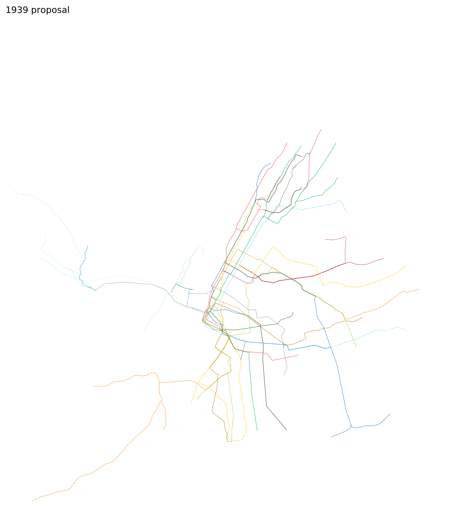
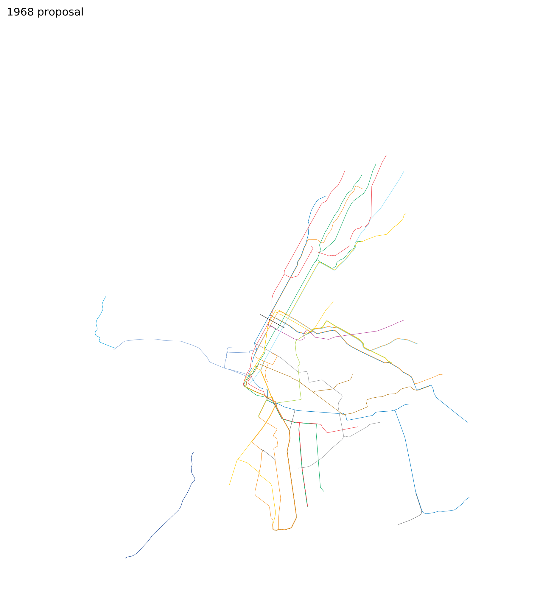
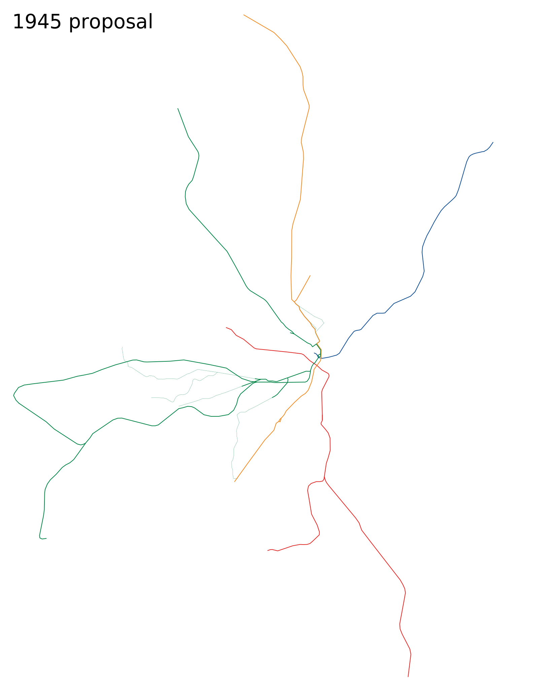

Unrealised Rapid Transit Plans
New YorkGould 1891 Request to Transit Commission

1890 actual 1891 proposal 1920 actual New York
1939 IND Second System

1935 actual 1939 proposal 2020 actual New York
1968 MTA Program for Action

1965 actual 1968 proposal 2020 actual New York
2008 Sander congestion pricing vision

2005 actual 2008 proposal 2020 actual Chicago
1976 CUTD Plan

1975 actual 1976 proposal 2020 actual Boston
1917 Beeler Report

1915 actual 1917 proposal 2020 actual Boston
1945 Coolidge Commission

1945 actual 1945 proposal 2020 actual San Francisco
1966 Muni Modernization Scheme

1965 actual 1966 proposal 2015 actual Cincinnati
1920 subway plan

New Orleans
1959 Monorail of Louisiana plan

Based on planned frequent midday service (notes).
Scale: = 10 km (30 CSS pixels per km)
Please send any corrections or questions to threestationsquare at gmail dot com.
See also: rapid transit timelines - miscellaneous timelines and maps